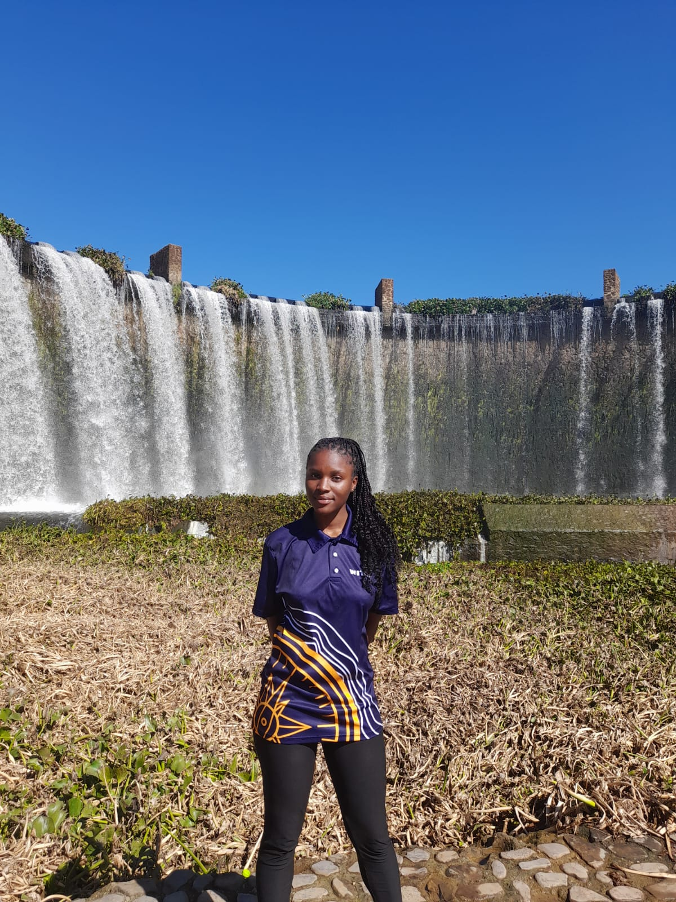
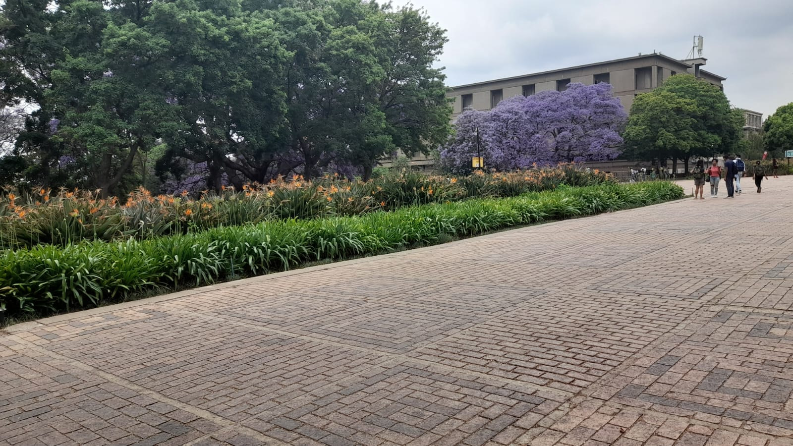

Professional skills and abilities
I am a final-year Engineering student with a foundation in software development, systems analysis, problem-solving, and game design. Throughout my academic journey, I have developed the ability to apply theoretical knowledge to practical projects while maintaining continuous learning and professional growth. My studies have provided me with technical and analytical skills that allow me to approach complex challenges in a structured and effective manner. My technical competencies include programming, Object-Oriented Programming (OOP), software design principles, and embedded systems development. I understand key OOP concepts such as encapsulation, inheritance, and polymorphism, which support the design of maintainable software solutions. My experience with AVR assembly programming has strengthened my understanding of computer architecture and low-level system operations. Through academic projects in game design and development, I have gained experience in iterative design, user-centered development, playtesting, and system evaluation, including designing gameplay mechanics, progression systems, navigation features, and audio feedback systems. These projects improved my ability to analyse user feedback and implement effective improvements. I have also developed research, documentation, and communication skills through technical reports and presentations. I am able to work independently and collaboratively in structured environments. As an aspiring engineering professional, I am motivated and adaptable, seeking opportunities to apply my skills in practical environments while continuing to grow in software engineering and related technological fields.
Professional mission statement and goals
As a final-year Engineering student, my professional mission is to apply my technical knowledge, analytical thinking, and problem-solving abilities to develop innovative and effective technology solutions that create meaningful value for organizations and society. I am committed to continuous learning and professional growth in both academic and professional environments. My goal is to successfully complete my degree while gaining practical industry experience that will strengthen my skills in software development, systems analysis, and engineering problem-solving. I aim to build a strong foundation as an engineering professional by developing expertise in designing, implementing, and optimizing technology-driven solutions to complex real-world problems. Through collaboration, adaptability, and a strong work ethic, I strive to contribute effectively within multidisciplinary teams while continuously improving my communication, leadership, and project management capabilities. In the medium term, I intend to pursue postgraduate studies and professional certifications to further expand my technical knowledge and career opportunities. Ultimately, my long-term goal is to establish myself as a respected engineering professional and future leader within the technology sector, contributing to innovation, technological advancement, and sustainable development while remaining committed to lifelong learning and continuous growth in an ever-evolving industry where I can make a lasting impact through practical and meaningful engineering solutions.
Educational background
The foundations of my degree are software development, systems analysis, and computer engineering principles. My studies include programming, object-oriented design, algorithms, data structures, software engineering, and AVR assembly, which has strengthened my understanding of computer architecture and low-level systems. I also have practical experience in building electronic circuits, developing games, and creating websites, applying theoretical concepts to real-world projects. Through project-based learning, I have focused on user-centered design, testing, and iterative improvement. I have also developed skills in research, technical documentation, and problem-solving, preparing me for entry into the professional engineering and technology environment.
Journey and life background
My academic and personal journey has been shaped by a steady interest in technology, problem-solving, and building systems that function in the real world. I grew up in South Africa in a supportive environment that encouraged curiosity and persistence, which influenced my early interest in how computers and electronic systems work. This led me to pursue engineering as a way to combine logical thinking with practical creation. Throughout my studies, I have developed a foundation in software development, systems analysis, and computer engineering principles, including programming, object-oriented design, algorithms, data structures, software engineering, and AVR assembly, which has strengthened my understanding of computer architecture and low-level systems. As my studies progressed, I focused on applying theory to practice through building electronic circuits, developing games, and creating websites, translating technical concepts into functional projects. These experiences improved my problem-solving skills and taught me the importance of iterative design, testing, and continuous improvement. I have also developed skills in research, technical documentation, and communication, preparing me for entry into the professional technology environment with both technical capability and practical experience.
Image from: phoenixNAP IT Glossary
